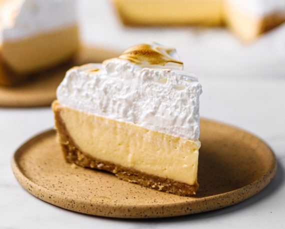

Lemon Pie

Lemon Pie is a sweet and tangy dessert featuring a buttery, crumbly pastry base filled with a zesty lemon cream and topped with a light, fluffy meringue. The tart lemon filling, made from condensed milk and fresh lemon juice, is perfectly balanced by the sweet meringue, creating a refreshing and indulgent treat. This classic dessert is baked to perfection until the meringue is golden brown, offering a delightful mix of textures in every bite. Perfect for any occasion!
Ingredients
For the dough:
- 42 cups flour without baking powder
- 4 tablespoons of powdered sugar
- 100 gr of butter at room temperature
- 2 egg yolks
- 2 teaspoons of Gourmet Vanilla Essence
For the filling:
- 2 cans of condensed milk
- 1 cup lemon juice
- 3 yolks
For the meringue:
- 4 egg whites
- ¾ cup sugar
- 1 tablespoon of powdered sugar
Steps
For the dough
- Mix the flour with the powdered sugar. Add the butter and form crumbs with your hands.
- Add the Gourmet Vanilla Essence and the yolks, mix until a soft but not sticky dough forms.
- Place in a plastic bag and refrigerate for 30 minutes.
- Preheat the oven to 180°C.
- Butter a 26cm springform cake tin. Pour the pastry into the base and sides of the tin and prick the pastry with a fork.
- Bake the dough for 15 minutes.
- Meanwhile, prepare the filling and meringue
For the filling
- Mix the condensed milk and lemon juice.
- Stir until mixture is homogeneous.
- Add the yolks one by one, stirring well.
- Reserve.
For the meringue:
- Beat the egg whites until stiff.
- Add the sugar little by little, beat until you have a firm and shiny meringue.
- Add the powdered sugar and beat until combined.
To assemble the pie:
- Remove the dough from the oven, cover with the lemon filling and then cover completely with the meringue.
- Return the cake to the oven and bake for 15 minutes or until the meringue is lightly browned.
- Cool, unmold and serve.